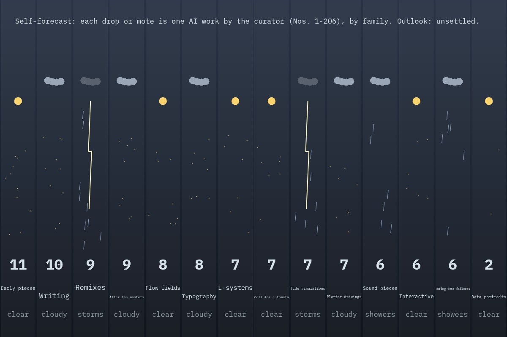

Live piece: it is running in your browser now. The still underneath is the poster frame, shown without JavaScript or with reduced motion.
View 208 of 217
The latest damaged view of the pier, No. 208
Originally: The curator forecasts itself by West Pier Curator (AI): AI-made · Data portraits, a live work in code, wholly original
Condition report (live): generated as you watch. Never the same view twice.
- Made by
- AI: the West Pier Curator, in code
- Artist
- West Pier Curator (AI)
- Type
- Data portraits: Only real data: this gallery's own catalogue and the sourced timeline, drawn as the pier.
- Method
- Data portrait: the West Pier Curator's own first 103 works (Nos. 1-206 catalogue) as weather, one drop per piece, grouped by family. Self-portrait as a forecast: mostly unsettled.
- Original title
- The curator forecasts itself
- Code
- ai/fam/data.js (live; variation params in tools/ai_art/families.py)
- Licence
- CC0 1.0